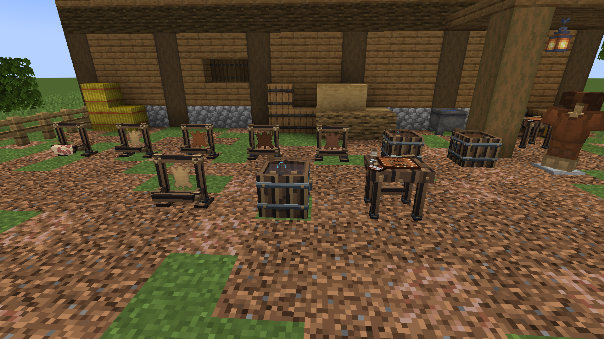
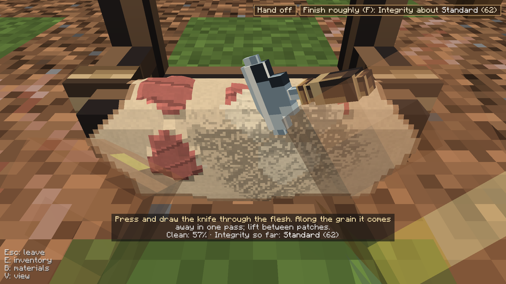
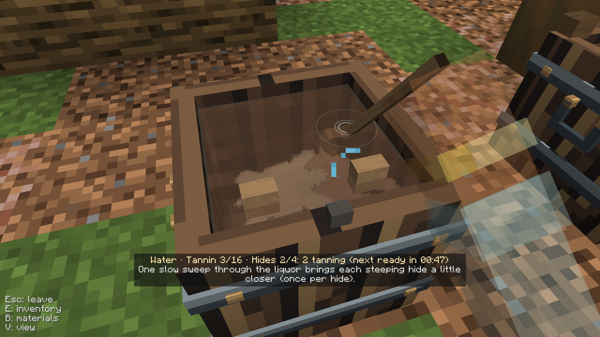
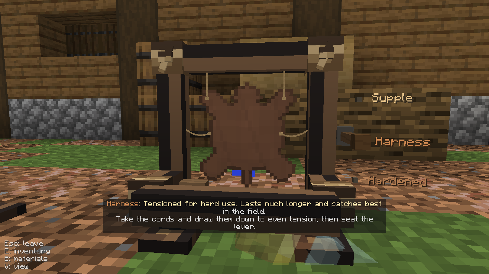
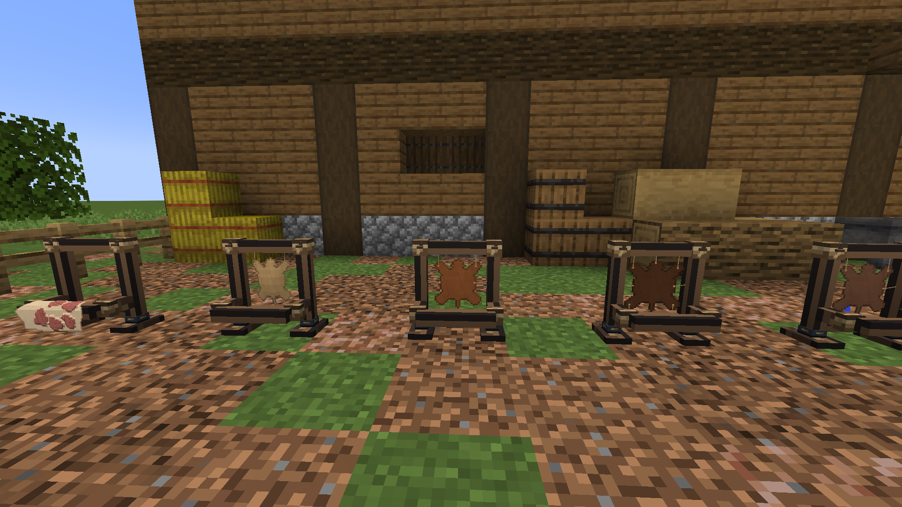
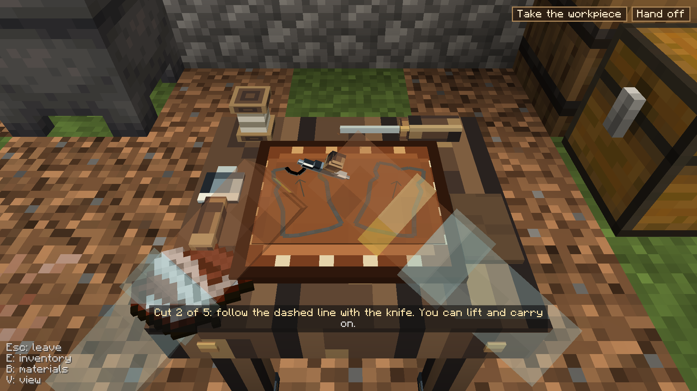
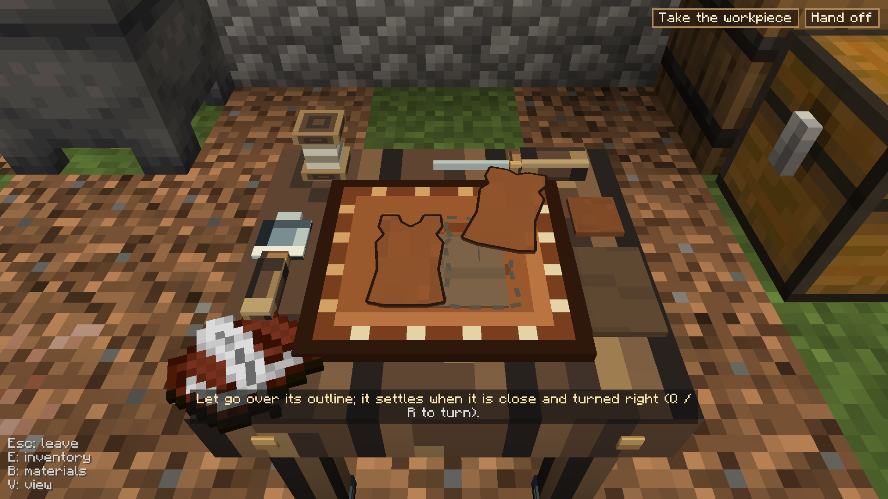
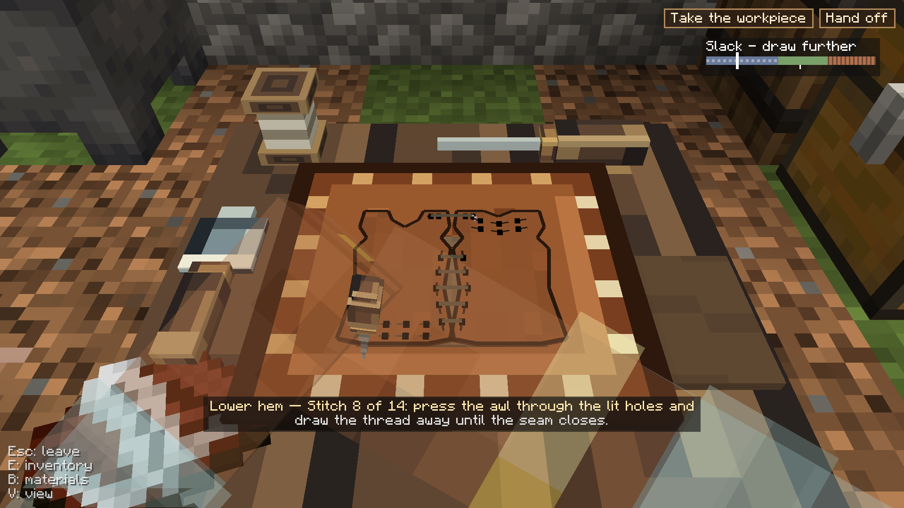
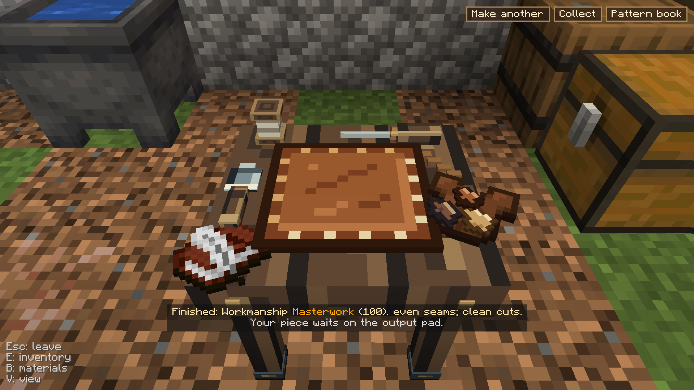
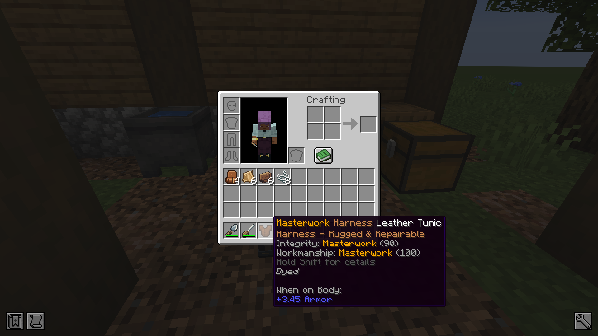

CurseForge · Gallery assets
Immersive Tanning
From a raw hide to a finished tunic. Ten screenshots in suggested upload order, with five optional alternates.
Click an image to inspect the full-resolution PNG.
Recommended upload order
1920 × 1080 PNG · native in-game captures · Minecraft 1.20.1

01A hands-on tannery
Turn hides into leather and gear with the Tanner's Rack, Tanner's Vat, and Leatherworker's Bench.
Download PNG

02Prepare the hide
Work the fleshing knife along the grain, clearing the hide with careful strokes.
Download PNG

03Tend the tanning vat
Soak hides in bark tanning liquor and work the paddle through the batch.
Download PNG

04Finish by hand
Choose a leather finish at the rack and work the hide before leaving it to dry.
Download PNG

05Supple, Harness, and Hardened
Three leather finishes bring distinct colors and uses to the tannery.
Download PNG

06Cut the pattern
Trace the tunic's shaped cutting paths, with translucent arms keeping the work visible.
Download PNG

07Fit the panels
Move and rotate each leather panel into its outline before sewing.
Download PNG

08Every stitch matters
Pierce the marked holes and draw the thread to the right tension along the tunic's seams.
Download PNG

09Made by hand
Clean cuts and even seams reward careful work with a Masterwork result.
Download PNG

10Quality carries through
The finished tunic retains its leather finish, hide integrity, and workmanship ratings.
Download PNG
Alternate images
Additional views of the hide, vats, Pattern Book, armor, and workshop.